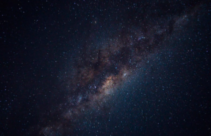

El Sistema Solar es un conjunto formado por el Sol y los ocho planetas que giran a su alrededor. De los ocho planetas, uno es donde vivimos: la Tierra.
Además de estos elementos, hay otros cuerpos celestes que también orbitan alrededor de la gran estrella solar, como los satélites de cada planeta, los cometas o los asteroides.
En el universo hay millones de galaxias. Una de ellas es la que conocemos como Vía Láctea. La Vía Láctea, formada por estrellas, polvo y gas, tiene forma de espiral. Podría decirse que su aspecto es como un remolino con varios brazos; en uno de ellos, el llamado brazo de Orión, se encuentra el Sistema Solar.
Lo cierto es que hace tanto tiempo que es muy difícil saber este dato con seguridad, pero se cree que fue hace… ¡4.5 MIL MILLONES DE AÑOS! Estamos hablando de un espacio temporal impactante que nos resulta difícil de imaginar.
Según las investigaciones más recientes, una explosión de una estrella provocó que una gran nube de gas y polvo se contrajera y empezara a girar a gran velocidad. La mayor parte de esta materia se concentró en el centro y se fue calentando hasta formar una gran estrella: el Sol.
Después, alrededor del Sol, el resto de polvo y gas fue chocando y juntándose hasta formar los diferentes planetas.
El Sol Mercurio Venus Tierra Marte Júpiter Saturno Urano NeptunoProyecto educativo sobre el Sistema Solar.